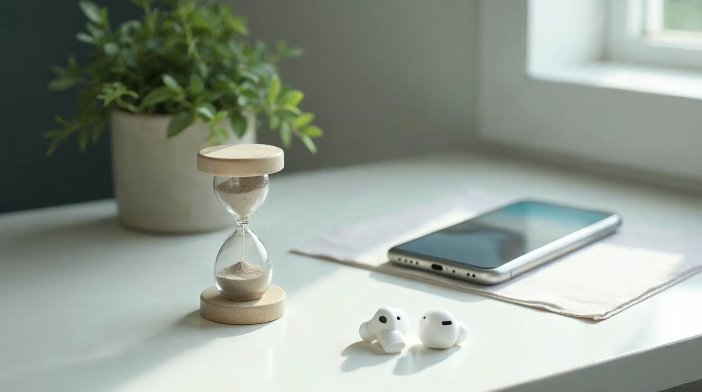

이종호 한의사 감수좋은꿈참사랑한의원 대표원장 (한의사 면허번호 19769)발행 2026-11-22 · 수정 2026-11-26
이 글의 차례
- 왜 이런 불편이 생길 수 있나요
- 짧은 집중 구간은 왜 도움이 될 수 있을까요?
- 집중이 안 되는 이유를 나눠 보면
- 먼저 이렇게 여쭙니다
- 일상에서 먼저 해 볼 수 있는 것
- 집중 구간은 이렇게 시작해 보세요
- 배경 소리는 어떻게 고르고 얼마나 크게 둘까요?
- 상황별 예시
- 스스로 점검해 보세요
- 쉬는 5분은 어떻게 보내면 좋을까요?
- 하루 시간표에 집중 구간을 넣어 보면
- 잠과 식사는 집중을 어떻게 받쳐 줄까요?
- 공부 자리는 이렇게 정리해 보세요
- 휴대전화와는 어떻게 거리를 둘까요?
- 집중이 잘 안 된 날은 어떻게 마무리할까요?
- 같이 공부하는 사람과 집중 구간을 맞춰 볼까요?
- 한의원에서 함께 살필 수 있는 경우
- 이렇게 기록해 오시면 상담이 쉬워집니다
- 얼마나 지켜보고 언제 상담할까요
- 이런 증상은 먼저 확인이 필요합니다
- 함께 읽으면 좋은 글
집중이 자꾸 끊길 때는 짧게 집중하고 짧게 쉬는 구간을 정해 두고, 주변 소리를 일정하게 만들어 보는 방법을 먼저 해 볼 수 있습니다. 책상 앞에 오래 앉아 있어도 머리에 잘 들어오지 않는 날이 있지요. 의지가 약해서라고 탓하기보다 잠, 식사, 환경부터 함께 돌아보시길 권합니다.
시험이나 마감을 앞두고 있으면 집중이 안 된다는 사실 자체가 조바심을 키워, 더 오래 앉아 버티려다 오히려 지치는 일이 생기기 쉽습니다. 이 글에서는 짧은 집중 구간과 배경 소리를 쓰는 방법을 정리하고, 그것만으로 부족할 때 무엇을 함께 살피는지 말씀드리겠습니다.
왜 이런 불편이 생길 수 있나요
- 잠이 부족하거나 끼니가 불규칙하면 의지와 상관없이 집중이 짧게 끊기는 경우가 많습니다.
- 휴대전화 알림처럼 작은 방해가 반복되면 다시 몰입하는 데 시간이 걸려 하루 전체가 흐트러지기 쉽습니다.
- 너무 조용한 곳에서는 작은 소리에도 예민해지고, 시끄러운 곳에서는 소음을 견디느라 머리가 쉽게 피곤해질 수 있습니다.
- 목과 어깨가 뻣뻣하거나 눈이 피로해도 집중력이 떨어진 것처럼 느껴질 수 있습니다.
짧은 집중 구간은 왜 도움이 될 수 있을까요?
오늘 다섯 시간 공부하겠다는 목표는 크고 막연해서 시작 자체를 미루게 만들기 쉽습니다. 반면 25분만 이 단원을 보겠다는 목표는 끝이 보여 첫발을 떼기가 한결 가볍습니다.
집중은 시간이 지날수록 조금씩 흐려지는데, 흐려지기 전에 스스로 쉬는 시간을 정해 두면 지쳐서 멈추는 일이 줄어듭니다. 쉬는 시간이 예약되어 있다는 것만으로 지금 이 구간을 버틸 힘이 생기기도 합니다.
구간이 끝날 때마다 무엇을 했는지 짧게 표시하면 하루에 집중한 양이 눈에 보입니다. 얼마나 오래 앉아 있었는지가 아니라 몇 구간을 채웠는지로 하루를 돌아보게 되어 스스로를 덜 탓하게 됩니다.
집중이 안 되는 이유를 나눠 보면
- 졸음이 먼저라면: 전날 잠이 모자랐거나 점심을 많이 먹은 뒤인 경우가 많아, 집중 구간보다 잠과 식사량을 먼저 살핍니다.
- 생각이 많아서라면: 걱정이나 할 일이 머리를 채우고 있는 경우라, 구간을 시작하기 전에 떠오르는 것을 종이에 쏟아 놓고 시작해 봅니다.
- 몸이 불편해서라면: 목·어깨 뻐근함, 눈 피로, 허리 불편이 주의를 빼앗는 경우라 자세와 쉬는 동작을 먼저 바꿉니다.
- 환경 때문이라면: 알림, 주변 대화, 너무 덥거나 건조한 공기가 원인일 수 있어 자리와 소리를 바꿔 봅니다.
- 할 일이 막연해서라면: 무엇부터 할지 정해지지 않아 미루는 경우라 첫 단계만 작게 쪼개 적어 봅니다.
어릴 때부터 오랫동안 집중이 어려웠고 공부뿐 아니라 일상 곳곳에서 같은 어려움이 이어졌다면, 생활 방법만으로 풀려고 하기보다 정신건강의학과에서 한번 평가를 받아 보시길 권합니다.
먼저 이렇게 여쭙니다
- 집중이 끊기는 시간대가 정해져 있나요?
- 잠은 충분히 잤고, 식사는 규칙적으로 하고 있나요?
- 휴대전화를 가까이 두고 자주 확인하나요?
- 주변이 시끄럽거나 너무 조용해서 오히려 불편한가요?
- 공부나 일을 시작하기까지 미루는 시간이 긴 편인가요?
- 하루 중 머리가 가장 맑은 시간대는 언제인가요?

일상에서 먼저 해 볼 수 있는 것
- 25분 집중하고 5분 쉬는 방식을 며칠 시험해 보기
- 휴식 때는 휴대전화보다 물 마시기와 스트레칭을 먼저 하기
- 잔잔한 빗소리나 선풍기 소리 같은 배경 소리를 작게 틀어 주변 소음 가리기
- 할 일을 작게 쪼개 첫 단계만 시작하기
- 휴대전화는 다른 방이나 가방에 넣어 두고 쉬는 시간에만 확인하기
- 같은 자리, 같은 시각에 공부를 시작해 몸이 그 자리를 공부하는 곳으로 익히게 하기
- 물병을 책상에 두고 구간 사이마다 한 모금씩 마시기
집중 구간은 이렇게 시작해 보세요
- 구간을 시작하기 전에 이번 25분 동안 할 일을 한 줄로 적습니다. "영어 독해 지문 3개"처럼 끝났는지 알 수 있는 크기가 좋습니다.
- 타이머는 휴대전화보다 탁상 타이머나 손목시계를 쓰면 알림에 끌려가지 않기 좋습니다.
- 구간 중에 다른 생각이나 할 일이 떠오르면 옆 종이에 한 단어로 적어 두고 하던 일로 돌아옵니다.
- 5분 휴식에는 일어나서 물을 마시고 창밖 먼 곳을 보며 눈을 쉬게 합니다.
- 네 구간쯤 마치면 15~30분 길게 쉬며 가볍게 걷거나 간식을 먹습니다.
- 첫날부터 많이 채우려 하기보다 하루 4~6구간에서 시작해 몸에 익으면 늘려 갑니다.
- 하루가 끝나면 채운 구간 수와 가장 잘 된 시간대를 적어 다음 날 계획에 반영합니다.
배경 소리는 어떻게 고르고 얼마나 크게 둘까요?
백색소음은 여러 높이의 소리가 고르게 섞인 '쉬—' 하는 소리이고, 빗소리나 파도 소리처럼 낮은 소리가 많은 배경 소리를 더 편하게 느끼는 분도 있습니다. 어떤 소리가 맞는지는 사람마다 달라 며칠씩 바꿔 가며 들어 보는 것이 좋습니다.
배경 소리의 역할은 주변의 갑작스러운 소리를 덮어 주는 것이라, 크기는 주변 대화가 또렷하게 들리지 않을 정도면 충분합니다. 소리를 키울수록 귀가 피로해지고 오히려 머리가 무거워질 수 있습니다.
가사가 있는 노래는 말소리를 알아듣는 데 머리를 함께 쓰게 해, 글을 읽거나 외우는 공부에는 방해가 되는 경우가 많습니다. 음악을 듣고 싶다면 가사 없는 잔잔한 곡을 작게 틀어 보세요.
이어폰을 오래 끼면 귀가 답답하고 머리가 조이는 느낌이 들 수 있어, 한 시간에 한 번쯤은 빼고 귀를 쉬게 합니다. 시험장처럼 소리를 고를 수 없는 곳도 있으니 일주일에 몇 번은 배경 소리 없이 공부하는 연습도 함께 해 두면 좋습니다.
상황별 예시
- 예를 들어 스터디카페에서 옆자리 키보드 소리나 대화가 계속 신경 쓰이는 경우라면, 빗소리 같은 배경 소리를 작게 틀고 자리를 출입문에서 먼 곳으로 옮겨 보는 것부터 해 봅니다.
- 예를 들어 집에서 공부하면 침대와 휴대전화가 가까워 자꾸 눕게 되는 경우라면, 휴대전화를 다른 방에 두고 25분 구간을 세 번만 채운 뒤 쉬는 식으로 작게 시작해 봅니다.
- 예를 들어 퇴근 뒤 밤에 공부하는 직장인이 첫 구간부터 멍한 경우라면, 저녁을 가볍게 먹고 10분 걷거나 씻은 뒤 시작했을 때 머리가 조금 맑아지는지 기록해 봅니다.
스스로 점검해 보세요
- 공부를 시작하기까지 30분 넘게 미루는 날이 많나요?
- 한 번 앉으면 휴대전화를 몇 번이나 확인하나요?
- 쉬는 시간이 계획보다 길어져 다시 앉기 어려운 날이 많나요?
- 잠이 부족한 날 집중이 유독 더 짧아지나요?
- 목·어깨 뻐근함이나 눈 피로 때문에 자꾸 멈추게 되나요?
- 배경 소리를 크게 틀어야만 집중이 되나요?
- 집중이 안 되는 날 스스로를 심하게 탓하게 되나요?
쉬는 5분은 어떻게 보내면 좋을까요?
쉬는 시간에 휴대전화를 열면 5분이 15분이 되기 쉽고, 눈도 쉬지 못합니다. 대신 자리에서 일어나 물을 한 잔 마시고, 창밖 먼 곳을 20초쯤 바라보며 눈의 초점을 풀어 주세요.
어깨를 귀 쪽으로 올렸다 툭 떨어뜨리기, 두 팔을 머리 위로 뻗어 몸 옆구리 늘이기, 제자리에서 가볍게 걷기를 번갈아 해 보면 목과 등의 뻐근함이 쌓이는 것을 줄이는 데 도움이 됩니다.
쉬는 시간이 끝나기 1분 전에는 다음 구간에 할 일을 다시 확인합니다. 무엇을 할지 알고 앉으면 다시 몰입하기까지 걸리는 시간이 짧아집니다.
하루 시간표에 집중 구간을 넣어 보면
예를 들어 오전에 머리가 가장 맑은 분이라면, 오전에는 이해가 필요한 과목을 25~50분 구간으로 세 번에서 네 번 넣고, 점심 뒤 졸린 시간에는 문제 풀이나 정리처럼 손을 움직이는 공부를 짧은 구간으로 배치해 볼 수 있습니다.
저녁에는 하루 동안 표시해 둔 틀린 문제나 메모를 정리하는 구간을 두고, 잠들기 한 시간 전에는 구간을 멈춥니다. 늦은 밤까지 구간을 이어 가면 그날은 많이 한 것 같아도 다음 날 아침 첫 구간이 무거워지기 쉽습니다.
일주일 동안 구간 수를 적어 보면 요일별, 시간대별로 집중이 잘 되는 흐름이 보입니다. 그 흐름에 맞춰 어려운 과목과 쉬운 과목의 자리를 바꿔 보세요.
잠과 식사는 집중을 어떻게 받쳐 줄까요?
밤잠이 모자란 다음 날에는 같은 25분도 훨씬 길게 느껴지고, 중간에 멍해지는 순간이 잦아집니다. 집중 구간을 늘리고 싶다면 먼저 일어나는 시각을 일정하게 두고, 밤 공부를 잠자리 시각 직전까지 끌고 가지 않는 것이 출발점입니다.
끼니를 거르면 오전 중간이나 늦은 오후에 허기와 함께 집중이 뚝 떨어지기 쉽고, 반대로 점심을 너무 많이 먹으면 오후 첫 구간이 졸음으로 채워집니다. 세끼를 비슷한 시각에, 평소의 7~8할 정도로 먹어 보세요.
단 음료나 과자로 버티면 잠깐 힘이 나는 듯해도 금세 처지는 경우가 있어, 간식은 견과류 한 줌이나 과일처럼 가벼운 것으로 바꿔 봅니다.
공부 자리는 이렇게 정리해 보세요
책상 위에는 지금 하는 과목의 책과 필기구, 물만 두고 나머지는 치웁니다. 눈에 보이는 물건이 많을수록 주의가 이리저리 흩어지기 쉽습니다.
조명은 책 위가 고르게 밝도록 하고, 화면을 함께 쓴다면 화면 밝기를 주변보다 지나치게 밝지 않게 맞춥니다. 방이 너무 덥거나 건조하면 머리가 무거워질 수 있어 가끔 창문을 열어 공기를 바꿔 주세요.
휴대전화와는 어떻게 거리를 둘까요?
휴대전화는 확인하지 않아도 책상 위에 놓여 있는 것만으로 주의를 조금씩 빼앗는다는 이야기가 있습니다. 구간 중에는 화면을 뒤집어 두는 것보다 가방이나 다른 방에 넣어 눈에 보이지 않게 하는 것이 좋습니다.
인강처럼 기기를 써야 하는 공부라면 알림을 모두 끄고, 공부에 쓰는 앱만 첫 화면에 남겨 두세요. 쉬는 시간에만 메시지를 한 번에 몰아서 확인하는 규칙을 정해 두면, 확인하고 싶은 마음이 들 때 "5분 뒤에 보면 된다"고 미룰 수 있습니다.
메시지를 바로 답하지 않으면 불안한 분은 가까운 사람들에게 공부 시간에는 답이 늦다고 미리 알려 두는 것도 방법입니다.
집중이 잘 안 된 날은 어떻게 마무리할까요?
계획한 구간을 다 채우지 못한 날에도 채운 구간만큼은 표시해 두세요. 하루를 "망쳤다"로 기억하기보다 "세 구간을 했다"로 남겨 두면 다음 날 다시 앉기가 한결 수월합니다.
잠들기 전에는 내일 첫 구간에 할 일 하나만 적어 두고 책을 덮습니다. 아침에 무엇부터 할지 정해져 있으면 시작을 미루는 시간이 줄어듭니다.
같이 공부하는 사람과 집중 구간을 맞춰 볼까요?
혼자서는 시작이 어렵다면 친구나 스터디 구성원과 같은 시각에 구간을 시작하고 쉬는 방법도 있습니다. 서로 얼굴을 보지 않더라도 "지금 같이 시작했다"는 느낌이 첫발을 떼는 데 도움이 되는 분이 많습니다.
다만 쉬는 시간이 수다로 길어지지 않도록 쉬는 5분에는 각자 일어나 물을 마시고 돌아오는 것으로 정해 두세요. 하루 끝에 채운 구간 수만 짧게 나누면 서로에게 부담 없는 응원이 됩니다.
한의원에서 함께 살필 수 있는 경우
- 공부할 때 집중이 자주 흐트러지는 경우 공부 리듬과 휴식을 함께 살핍니다.
- 소음 때문에 머리가 쉽게 피곤하다면 공부 환경과 몸의 긴장을 봅니다.
- 오래 집중하면 머리와 목이 뻐근해진다면 앉는 자세와 쉬는 방법을 같이 짚어 봅니다.
좋은꿈참사랑한의원에서는 먼저 마음의 긴장이 몸에 어떻게 나타나는지 충분히 듣고, 진맥을 기본으로 하고 필요하다고 판단될 때 설진을 더해 살핀 뒤 침이나 한약 상담 등 맞는 방법을 함께 정합니다. 불안이나 우울이 깊으면 정신건강의학과 진료를 먼저 권해 드리기도 합니다.
이렇게 기록해 오시면 상담이 쉬워집니다
- 집중이 잘 된 시간대와 자주 끊긴 시간대
- 전날 잔 시간과 그날 식사 시간
- 집중이 끊긴 이유(알림, 졸음, 소음, 몸의 불편)
- 목·어깨 뻐근함이나 눈 피로가 있는지
- 배경 소리를 쓴 날과 쓰지 않은 날의 차이
얼마나 지켜보고 언제 상담할까요
- 집중 구간과 배경 소리는 1~2주 정도 이어서 해 보면서 하루에 채운 구간 수가 어떻게 달라지는지 적어 봅니다.
- 2주 넘게 해 보아도 구간을 거의 채우지 못하고 잠이나 식사 리듬까지 흔들린다면 상담을 받아 보세요.
- 집중이 안 되는 것과 함께 걱정이나 가라앉은 기분이 오래간다면 정신건강의학과 진료도 함께 생각해 보시길 권합니다.
이런 증상은 먼저 확인이 필요합니다
- 집중이 안 되는 상태가 몇 주 이상 이어지고 일상이 무너지는 경우
- 기억이 갑자기 흐려지거나 말이 어눌해지는 경우
- 스스로를 해칠 생각이 들면 ☎ 109로 바로 연락하세요.
이런 신호가 있으면 한의원보다 가까운 병원이나 응급실을 먼저 찾으세요.
함께 읽으면 좋은 글
- 사람 많은 스터디카페에서 작은 소리에도 예민해지고 집중이 안 될 때는?
- 수험생이 쉽게 지치고 집중이 오래가지 않을 때, 체력과 집중력은 어떻게 살피나요?
- 공부하다 오후에 졸음이 몰려올 때는 어떻게 살펴보나요?

여쭙는 것
- 집중이 끊기는 시간대가 정해져 있나요?
- 잠은 충분히 잤고, 식사는 규칙적으로 하고 있나요?
- 휴대전화를 가까이 두고 자주 확인하나요?
생활에서 해 볼 것
- 25분 집중하고 5분 쉬는 방식을 며칠 시험해 보기
- 휴식 때는 휴대전화보다 물 마시기와 스트레칭을 먼저 하기
- 잔잔한 빗소리나 선풍기 소리 같은 배경 소리를 작게 틀어 주변 소음 가리기
한의원에서 함께 살필 것
- 공부할 때 집중이 자주 흐트러지는 경우 공부 리듬과 휴식을 함께 살핍니다.
- 소음 때문에 머리가 쉽게 피곤하다면 공부 환경과 몸의 긴장을 봅니다.
- 오래 집중하면 머리와 목이 뻐근해진다면 앉는 자세와 쉬는 방법을 같이 짚어 봅니다.
먼저 확인이 필요한 신호
- 집중이 안 되는 상태가 몇 주 이상 이어지고 일상이 무너지는 경우
- 기억이 갑자기 흐려지거나 말이 어눌해지는 경우
- 스스로를 해칠 생각이 들면 109로 바로 연락하세요.
한눈에 보는 표
| 구분 | 핵심 |
|---|---|
| 여쭙는 것 | 집중이 끊기는 시간대가 정해져 있나요? 잠은 충분히 잤고, 식사는 규칙적으로 하고 있나요? |
| 생활에서 해 볼 것 | 25분 집중하고 5분 쉬는 방식을 며칠 시험해 보기 휴식 때는 휴대전화보다 물 마시기와 스트레칭을 먼저 하기 |
| 한의원에서 함께 살필 것 | 공부할 때 집중이 자주 흐트러지는 경우 공부 리듬과 휴식을 함께 살핍니다. 소음 때문에 머리가 쉽게 피곤하다면 공부 환경과 몸의 긴장을 봅니다. |
| 먼저 확인이 필요한 신호 | 집중이 안 되는 상태가 몇 주 이상 이어지고 일상이 무너지는 경우 기억이 갑자기 흐려지거나 말이 어눌해지는 경우 |
자주 묻는 질문
백색소음이 모두에게 맞나요?
사람마다 달라 방해가 되면 바로 끄고, 조용한 환경이 편한 분은 그대로 두셔도 됩니다. 이어폰으로 들을 때는 소리를 작게 두고 중간중간 귀를 쉬게 해 주세요.
휴식 시간에 영상을 보면 안 되나요?
영상은 쉬는 시간이 길어지기 쉬워 눈을 쉬게 하는 활동을 권하는 경우가 많습니다.
한의원에서는 무엇을 보나요?
잠과 식사, 긴장 정도, 몸의 피로를 함께 묻고 생활 전체를 살핍니다.
25분이 너무 짧게 느껴지면 늘려도 되나요?
괜찮습니다. 40~50분 집중하고 10분 쉬는 식으로 자신에게 맞는 길이를 찾되, 쉬는 시간에는 자리에서 일어나 눈과 몸을 쉬게 하는 것을 권합니다.
배경 소리를 틀면 잠이 오는데 어떻게 하나요?
너무 잔잔한 소리가 졸음을 부르는 분도 있습니다. 소리를 조금 바꾸거나 끄고, 졸음이 잦다면 전날 잠과 식사량부터 함께 살펴보세요.
좋은꿈참사랑한의원은 재진 때 지난번 이야기부터 이어서 여쭙니다. 진료시간과 예약은 오시는 길에서 확인하세요.
어디서 상담받을 수 있나요?
좋은꿈참사랑한의원은 서울 동작구 만양로2길 2 신성빌딩 3층·5층(서울 동작구 상도동, 7호선 상도역 3번 출구 근처)에 있습니다. 한의사 3명(이종호 대표원장, 조영기 수석진료원장, 정원영 진료원장)이 진료합니다. 진료시간은 평일 09:30~20:00(점심 13:00~14:00), 토·일·공휴일 09:30~15:00이며, 방문 전 전화로 확인을 권합니다. 예약은 네이버 예약, 카카오톡 상담, 전화 02-815-7510로 받습니다.
이 글은 일반적인 건강 정보이며 개인의 진단이나 치료를 대신하지 않습니다. 증상이 있거나 복용 중인 약이 있다면 진료를 통해 확인하세요. 치료 효과는 개인마다 다를 수 있습니다.
작성 기준: 일반적으로 알려져 있는 건강 정보를 참고해 정리했습니다(대표원장 감수). 증상 기록은 1~2주 동안 하루 1회, 비슷한 시간에 적어 오시면 지난 상태와 비교하기 쉽습니다.